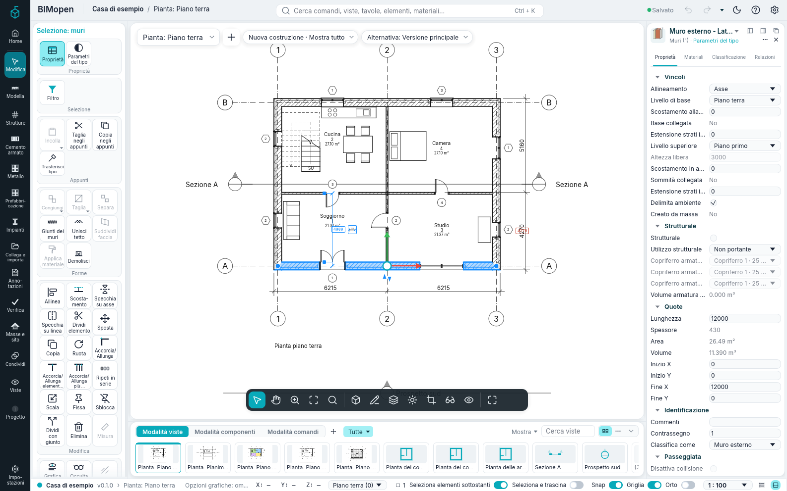
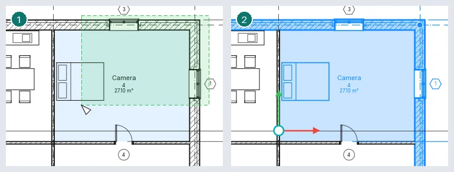
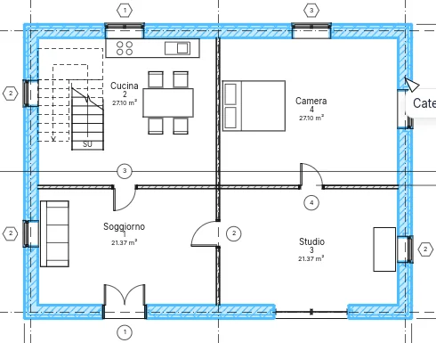
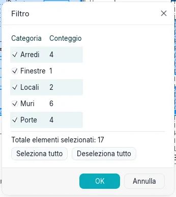
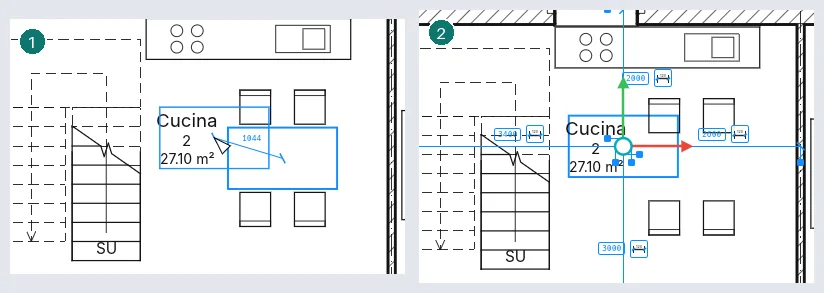
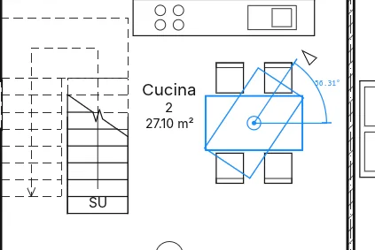

Selezione e modifica
Prima di quasi ogni modifica si seleziona ciò che si vuole cambiare. Questo capitolo descrive come gli elementi vengono evidenziati e selezionati, come si affina una selezione, come si trascinano gli elementi selezionati e gli strumenti del gruppo Modifica. Tutto funziona allo stesso modo nell'applicazione desktop e nel browser.
Evidenziare e selezionare

Porta il cursore su un elemento: le sue linee si disegnano più spesse, la barra di stato in fondo alla finestra lo nomina (categoria e tipo, come Muri : Muro esterno…) e dopo un istante le stesse parole compaiono sotto il cursore. Fai clic per selezionare l'elemento evidenziato. Un elemento selezionato è disegnato nel colore di selezione in ogni vista in cui compare, e il numero all'estremità destra della barra di stato dice quanti elementi sono selezionati.
Un clic destro su un elemento lo seleziona e apre il menu contestuale. Esc, o un clic in un punto vuoto, annulla la selezione.
| Per… | Fai così |
|---|---|
| aggiungere un elemento alla selezione | Ctrl + clic |
| togliere un elemento dalla selezione | Shift + clic |
| selezionare ciò che è tutto dentro una finestra | trascina da sinistra a destra |
| selezionare ciò che una finestra tocca | trascina da destra a sinistra (la finestra è tratteggiata) |
| aggiungere, o togliere, ciò che una finestra prende | trascina con Ctrl, o con Shift |
| selezionare di nuovo ciò che era selezionato prima | Ctrl+Left, o clic destro ▸ Seleziona precedente |

Le finestre funzionano nelle piante, nelle sezioni, nelle tavole e nelle viste 3D. In una vista 3D il pulsante sinistro seleziona; il pulsante destro orbita e il pulsante centrale sposta la vista (vedi L'interfaccia).
Elementi vicini: TAB
Quando gli elementi sono vicini o uno sopra l'altro, quello evidenziato può non essere quello che vuoi. Tieni fermo il cursore e premi Tab: viene evidenziato l'elemento successivo sotto il cursore e la barra di stato lo nomina. Shift+Tab torna indietro. Fai clic per selezionare l'elemento evidenziato. In una vista 3D Tab passa dall'elemento più vicino a quelli dietro; su una tavola, tra le viste collocate una sopra l'altra.
Catene di muri e linee
Muri e linee uniti alle estremità formano una catena. Con il cursore su uno di essi, Tab evidenzia l'intera catena (la barra di stato dice Catena di n elementi uniti); un clic la seleziona. Una catena può mescolare muri, separatori ambienti e contorni superficie; le linee di dettaglio fanno catena con le linee di dettaglio della loro vista. Dove se ne incontrano tre o più, la catena prosegue lungo quello che forma l'angolo più piccolo con l'ultimo; un muro che si ferma contro un altro tra le sue estremità porta la catena lungo quel muro.

Parte di una catena. Seleziona il primo elemento della parte, porta il cursore sull'ultimo e premi Tab: vengono evidenziati gli elementi compresi. Premendo di nuovo Tab si evidenzia l'intera catena, la terza volta solo l'ultimo elemento. Fai clic per selezionare ciò che è evidenziato. Su una catena chiusa la parte gira dal lato dove si trova il cursore: vicino all'estremità dell'ultimo elemento che quel verso raggiunge per prima.
Elementi uniti in un punto. Seleziona un elemento e tieni il cursore su di esso, vicino a un'estremità dove ne sono uniti altri. Tab lo evidenzia insieme al più vicino di quelli uniti lì; Tab di nuovo, tutti gli elementi uniti lì. Fai clic per selezionarli.
Una catena selezionata. Dove due muri o linee selezionati si incontrano compare un controllo rotondo. Trascinalo per spostare il giunto: le estremità selezionate lì si muovono insieme e restano unite; gli elementi non selezionati restano dove sono. Trascina la catena con Shift per spostarla intera, in orizzontale o in verticale; trascinala con Ctrl per collocarne una copia.
Filtrare una selezione
Fai clic sul numero nella barra di stato, o su Filtro nella scheda contestuale, per aprire Filtro. Elenca le categorie presenti nella selezione, quanti elementi ha ciascuna e il totale. Togli la spunta a una categoria per lasciarne fuori gli elementi: la selezione e il numero nella barra di stato si aggiornano subito. Seleziona tutto e Deseleziona tutto mettono o tolgono la spunta a tutte le categorie. OK conserva la selezione, Annulla riporta quella di partenza.

Seleziona tutte le istanze
Clic destro su un elemento ▸ Seleziona tutte le istanze, poi Visibile nella vista (gli
elementi dello stesso tipo mostrati nella vista attiva) o Nell'intero progetto. Digitare SA
e Enter fa lo stesso di Visibile nella vista. L'elemento deve avere un tipo: i locali, per
esempio, non ne hanno.
Trascinare gli elementi
Trascina un elemento selezionato per spostarlo; tutta la selezione si muove insieme, e un trascinamento si annulla con un solo Ctrl+Z. Una quota temporanea mostra lo spostamento, e la barra di stato la sua lunghezza (Sposta: 1500). Con Seleziona e trascina attivo nella barra di stato, un elemento si può trascinare senza selezionarlo prima; con il pulsante spento, un trascinamento che parte da un elemento non selezionato disegna una finestra.
- Un muro unito alle estremità a muri non selezionati si muove solo perpendicolarmente a sé stesso, e i muri uniti si allungano per restare uniti. Anche i muri che si fermano contro di esso lo seguono. Tieni premuto Shift per spostarlo liberamente; i muri uniti lo seguono comunque.
- Ogni altro elemento si muove liberamente; tieni premuto Shift per mantenere lo spostamento orizzontale o verticale.
- Porte e finestre si muovono con il loro muro e mantengono la loro posizione lungo di esso. Trascinate da sole scorrono lungo il muro; lasciate su un altro muro, passano in quello.
- Tieni premuto Ctrl quando inizi a trascinare per collocare invece una copia.
Gli elementi si trascinano nelle piante, nelle sezioni e nei prospetti (lungo la vista), sulle tavole (le viste) e nelle viste 3D, dove si muovono sul piano orizzontale in cui li hai presi. I tasti freccia spostano la selezione di un piccolo passo, arrotondato a un valore ordinato secondo lo zoom della vista; con Shift, di dieci passi.
Gli strumenti di modifica
Il gruppo Modifica della scheda contestuale ha tre righe: Allinea, Scostamento, Specchia su asse, Specchia su linea, Dividi elemento, Dividi con giunto; Sposta, Copia, Ruota, Accorcia/Allunga, Accorcia/Allunga elemento singolo, Accorcia/Allunga più elementi; Ripeti in serie, Scala, Fissa, Sblocca, Elimina. La barra di stato dice che cosa si aspetta ogni strumento, e la striscia delle opzioni ne mostra le opzioni. Esc annulla il passaggio in corso; premuto di nuovo, termina lo strumento.
Sposta, Copia, Ruota, Specchia su asse, Specchia su linea, Ripeti in serie e Scala lavorano sulla selezione. Avviati senza nulla di selezionato, ti lasciano selezionare prima (clic, Ctrl, finestre, Tab), poi proseguono quando premi Enter o Fine nella striscia delle opzioni.
Sposta, Copia e Ruota funzionano anche nelle viste 3D: i loro punti si prendono sul piano del livello cliccato.
Prima di ogni clic lo strumento mostra che cosa farebbe il clic: la selezione disegnata dove andrebbe (spostata, copiata, ruotata, specchiata rispetto all'asse sotto il cursore, spostata con l'offset dal lato del cursore, allineata al riferimento), che segue il cursore, con accanto la distanza o l'angolo.
Dove uno strumento chiede un secondo punto, puoi digitare invece una distanza (o un angolo) e premere Enter: compare accanto al cursore mentre scrivi, e si misura verso il cursore.
Sposta
Fai clic su un punto base, poi sulla destinazione. Lo strumento termina e gli elementi restano selezionati. Opzioni:

- Vincola: lo spostamento è lungo il muro selezionato o perpendicolare a esso (orizzontale o verticale per gli altri elementi);
- Dividi: i muri uniti a quelli spostati non li seguono, e una porta o una finestra si può spostare su un altro muro;
- Copia: si collocano invece delle copie; con Multipli, una a ogni clic fino a Esc.
Copia
Come Sposta, ma si colloca una copia. Con Multipli, una copia a ogni clic fino a Esc; Vincola come per Sposta.
Ruota
Il centro di rotazione compare al centro della selezione; trascinalo per metterlo altrove. Fai clic sul primo raggio, poi sul secondo: la selezione ruota dell'angolo tra i due, mostrato da una quota angolare temporanea. Invece del secondo raggio, digita l'angolo e premi Enter, oppure scrivilo in Angolo nella striscia delle opzioni e premi Enter. Copia ruota una copia; senza Dividi, i muri uniti a quelli ruotati li seguono.

Specchia su asse e Specchia su linea
Specchia su asse: fai clic su un muro, una griglia o una linea come asse. Specchia su linea: fai clic su due punti. Copia è spuntato: si colloca una copia speculare; togli la spunta per specchiare gli elementi stessi.
Ripeti in serie
Lineare: fai clic su due punti. Numero è quanti elementi in tutto. Con Sposta a: 2° i due punti danno la spaziatura; con Ultimo, l'ultimo elemento va al secondo punto e gli altri si distribuiscono uniformemente. Vincola mantiene la direzione lungo la selezione o perpendicolare a essa.
Radiale: trascina il centro attorno a cui girano le copie, fai clic sul primo raggio, poi sul secondo (oppure digita l'angolo e premi Enter, anche in Angolo). Con 2° l'angolo è tra elementi vicini, con Ultimo è l'apertura totale.
Offset
Sposta un muro o una linea perpendicolarmente a sé stesso, o ne colloca una copia (Copia è spuntato).
- Numerico: imposta Scostamento, poi fai clic sull'elemento dal lato verso cui deve andare. Premi prima Tab per spostare l'intera catena (della stessa categoria) come un tutto: i suoi angoli si mantengono.
- Grafico: fai clic sull'elemento (Tab per la catena), poi su due punti: la distanza tra di essi, perpendicolare all'elemento, è l'offset. Puoi invece digitarla. Ctrl copia.
Allinea
Fai clic sul riferimento, poi sull'elemento da allineare: la faccia dell'elemento più vicina al tuo clic va sulla faccia del riferimento più vicina al suo clic. Preferenza: sceglie Superfici del muro o Linee d'asse del muro. Dopo l'allineamento compare un lucchetto sulla faccia allineata: fai clic per mantenere i due allineati, così che spostando il riferimento si sposta anche l'altro. Senza Allineamento multiplo il clic successivo sceglie un nuovo riferimento; con l'opzione (o tenendo premuto Ctrl) puoi allineare più elementi allo stesso. Esc una volta inizia un nuovo allineamento, due volte termina lo strumento.
Un muro allineato e bloccato a una griglia la segue quando sposti la griglia, anche in 3D, e i muri uniti alle sue estremità si allungano o si accorciano restando uniti. Con Sposta con l'oggetto più vicino, tra le proprietà di un componente, il componente si sposta insieme al muro più vicino, alla stessa distanza.
Accorcia/Allunga
Muri e linee si riducono o si estendono; fai clic su ciascuno dalla parte da tenere.
- Accorcia/Allunga: due elementi, che poi si incontrano in un angolo;
- Accorcia/Allunga elemento singolo: il contorno, poi l'elemento;
- Accorcia/Allunga più elementi: il contorno, poi ogni elemento a turno.
Dividi elemento e Dividi con giunto
Dividi elemento: fai clic su un muro o su una linea dove deve diventare due. Con Elimina segmento interno, fai clic su due punti: la parte fra di essi viene rimossa, con le porte e le finestre che contiene. Dividi con giunto: imposta Distanza giunto, poi fai clic: le due parti restano a quella distanza.
Scala
Si possono mettere in scala muri e linee (e la posizione delle quote); con qualsiasi altra cosa selezionata, Scala non è disponibile. Grafico: fai clic sull'origine, sulla fine di un primo vettore, sulla fine di un secondo: gli elementi si scalano secondo il rapporto tra le due lunghezze (puoi digitare la seconda). Numerico: imposta Fattore di scala, poi fai clic sull'origine. Porte e finestre mantengono la loro distanza dal centro del muro.
Fissa e Sblocca
Fissa tiene gli elementi selezionati dove sono: non si possono trascinare, spostare con uno strumento né eliminare, e un messaggio lo dice. Un elemento fissato mostra una puntina quando è selezionato; fai clic sulla puntina, o usa Sblocca, per liberarlo.
Eliminare, annullare e ripristinare
Elimina (o il tasto Del) rimuove la selezione e ciò che ospita; gli elementi fissati restano. Ctrl+Z annulla l'ultima modifica e Ctrl+Y la ripristina: ogni strumento, trascinamento o spostamento con i tasti freccia è un solo passo.
Copia, taglia e incolla
Copia negli appunti (Ctrl+C) mette la selezione negli appunti; Taglia negli appunti (Ctrl+X) ce la mette e la toglie dal progetto. Incolla (Ctrl+V) la riporta. I tre pulsanti sono nel gruppo Modifica della scheda contestuale, accanto agli altri modi di Incolla; nello stile Classico, nel pannello Appunti. I tasti agiscono quando nessuno strumento è attivo e nessun campo è in modifica.
In una pianta, Incolla mostra al cursore le linee di ciò che è stato copiato: lo seguono, e un clic le posa lì. Gli elementi incollati restano selezionati. Premuto fuori da una pianta, Ctrl+V incolla nella stessa posizione.
Gli altri modi di Incolla (nello stile Classico, nel suo menu a discesa) lasciano gli elementi dove erano e non chiedono un punto:
| Modo | Dove vanno gli elementi |
|---|---|
| Incolla sui livelli scelti | Gli elementi del modello, nella stessa posizione, su ogni livello spuntato |
| Incolla nelle viste scelte | Gli elementi di una vista (linee, testi, quote…), in ogni vista spuntata, dello stesso tipo di quella da cui vengono |
| Incolla nella vista attiva | Nella stessa posizione, nella vista aperta e al suo livello |
| Incolla nella stessa posizione | Dove erano, anche in un altro progetto |
| Incolla sul livello cliccato | In una sezione o in un prospetto: il livello più vicino al clic si evidenzia con il suo nome; il clic incolla su di esso |
I due modi «scelti» aprono una finestra con un campo Cerca sopra l'elenco dei livelli o delle viste; spunta quelli che vuoi e fai clic su OK. Un modo che non può incollare nella vista aperta ciò che hanno gli appunti è grigio, e la barra di stato dice perché.
- Ogni incolla è un passo: un solo Ctrl+Z lo toglie tutto.
- Gli appunti restano quando si apre un altro progetto, così si possono incollare elementi da un progetto all'altro. I loro tipi vengono con loro; se quel progetto ha già un tipo con lo stesso nome, si usa quello. I livelli si trovano per nome, poi per quota.
- Incollato su un altro livello, un elemento con la parte superiore vincolata a un livello si vincola al livello che sta altrettanti livelli più in alto; dove quel livello non c'è, prende un'Altezza non collegata dello stesso valore.
- Gli elementi di una vista si incollano solo in viste dello stesso tipo; gli elementi del modello restano fuori da Incolla nelle viste scelte, quelli di una vista da Incolla sui livelli scelti. Il messaggio dice quanti sono rimasti fuori, e perché.
- Una porta o una finestra incollata da sola va nel muro su cui cade; se non c'è un muro, resta fuori e il messaggio lo dice.
- Una copia di un gruppo si copia con i suoi membri (vedi Gruppi).
- Incolla nella vista attiva è grigio nella vista da cui gli elementi sono stati copiati: lì non li sposterebbe. Apri un'altra vista, o usa Incolla nella stessa posizione.
- Copiata da sola, una copia di un gruppo di modello segue il cursore dalla sua origine.
Modifica elementi incollati
Dopo ogni incolla si apre Modifica elementi incollati: una barra sopra il disegno con il numero degli elementi incollati, mentre il resto del progetto è a mezzitoni e non si seleziona. Gli elementi incollati si possono ancora spostare e modificare con gli strumenti di sempre.
| Pulsante | Che cosa fa |
|---|---|
| Finalizza selezionati | Gli elementi incollati selezionati restano dove sono ed escono dalla modifica |
| Seleziona tutto | Seleziona tutti gli elementi incollati |
| Termina | Gli elementi incollati restano: l'incolla e le modifiche fatte loro sono un solo passo di Ctrl+Z |
| Annulla | Gli elementi incollati si tolgono, come prima dell'incolla |
Se un incolla ha lasciato fuori degli elementi (una porta che non trova un muro, per esempio), il messaggio lo dice e ricorda la barra.
Trasferisci tipo
Trasferisci tipo (MA), nello stesso gruppo, dà il tipo di un elemento ad altri. Fai clic
sull'elemento da cui prendere il tipo: il pennello accanto al cursore si colora, e la barra di
stato nomina il tipo. Poi fai clic su ogni elemento che deve prenderlo; cambiano solo gli elementi
della stessa categoria. Per darlo a molti in una volta, trascina una finestra attorno a loro e fai
clic su Termina selezione nella barra delle opzioni.
Fra due muri passano, oltre al tipo, l'offset di base, le estensioni degli strati e, se entrambi ne hanno una, l'altezza non collegata; se stanno sullo stesso livello di base, anche il vincolo superiore e il suo offset. Gli altri parametri dell'istanza restano come sono.
Un clic nel vuoto, o Esc, svuota il pennello per prendere un altro tipo; Esc di nuovo termina lo strumento.
Gruppi
Un gruppo tiene insieme degli elementi come uno solo, e ne posiziona copie altrove: tutte le copie di un gruppo sono uguali, e una modifica fatta a una raggiunge le altre.
Raggruppa (GP) fa della selezione un nuovo gruppo e la sua prima copia. Porte e finestre
entrano con i loro muri. Che cosa diventa il gruppo dipende da ciò che è selezionato:
- solo elementi del modello: un gruppo di modello;
- solo elementi di una vista (linee, testi, quote…): un gruppo 2D, che appartiene a quella vista;
- entrambi: un gruppo di modello, con un gruppo 2D collegato (Gruppo 2D collegato) che va con lui.
Un elemento sta al più in un gruppo: gruppi dentro gruppi non si fanno. Spostata, ruotata, specchiata o eliminata, una copia di un gruppo porta con sé i suoi membri; copiata, fa una nuova copia dello stesso gruppo.
Posiziona gruppo posiziona una nuova copia di un gruppo nel punto cliccato, sul livello attivo. Posizionata su un altro livello, la copia sposta i suoi livelli in alto di altrettanti livelli: un elemento la cui parte superiore va oltre l'ultimo livello prende un'Altezza non collegata dello stesso valore. Un gruppo 2D si posiziona in una vista.
Modifica gruppo apre l'editor del gruppo sulla copia selezionata: Aggiungi e Rimuovi aggiungono elementi al gruppo e ne tolgono membri (un muro esce con le sue porte e finestre; un membro rimosso diventa un elemento normale), Termina chiude la modifica e ogni altra copia del gruppo si rifà da questa, Annulla lascia il gruppo com'era.
Sciogli gruppo fa tornare elementi normali i membri della copia selezionata; il gruppo resta nel progetto, con le sue altre copie.
Escludi da questa copia toglie i membri selezionati solo dalla loro copia: le altre copie li tengono. Ripristina esclusi li riporta nella copia, presi da un'altra copia.
Gruppi 2D collegati mostra nella vista aperta, con la copia selezionata di un gruppo di modello, un gruppo 2D collegato posizionato rispetto a lei come lo è rispetto a un'altra copia (le quote di una copia, per esempio, misurano allora i muri di questa); lo nasconde anche di nuovo.
Nell'Indice del progetto, il nodo Gruppi elenca i gruppi, sotto Modello e 2D. Il menu di un gruppo ha Posiziona copia, Seleziona tutte le copie, Rinomina, Duplica ed Elimina; un gruppo si elimina solo quando non ha più copie.
Duplica dà al nuovo gruppo il numero successivo libero («Gruppo 1» diventa «Gruppo 2»); F2 rinomina il gruppo su cui hai fatto clic nell'indice.
Raggruppa senza nulla selezionato apre una finestra con il nome e il tipo del gruppo (Gruppo di modello o Gruppo 2D): il gruppo si apre vuoto nell'editor, e ciò che vi disegni o aggiungi ne fa parte. Termina senza membri non crea il gruppo.
Un doppio clic su una copia, o su un suo membro, apre l'editor del gruppo su quella copia, in una pianta, in una sezione, in un prospetto o in una vista 3D.
Sposta nel progetto, nel pannello Gruppo o nel menu del tasto destro su un membro raggiunto con Tab (accanto a Escludi), toglie il membro dalla sua copia e lo lascia nel progetto come elemento normale; un muro porta con sé le sue porte e finestre. Le altre copie lo tengono.
Dissocia dal gruppo di modello, su una copia di un gruppo 2D collegato senza quote né etichette, ne fa un gruppo 2D a sé (di un nuovo gruppo, se altre copie restano collegate).
Nelle Proprietà di una copia di un gruppo di modello, Livello di riferimento e Offset livello originale spostano i membri: un nuovo livello li porta su di altrettanti livelli, un nuovo offset li alza o li abbassa della differenza. I membri che non possono seguire (un elemento ospitato, un muro associato a un pavimento) restano dove sono, e un avviso lo dice.
Scorciatoie digitate
Digita le lettere e premi Enter: MV Sposta, CO Copia, RO Ruota, MM
Specchia su asse, DM Specchia su linea, AR Ripeti in serie, OF
Scostamento, AL Allinea, TR Accorcia/Allunga, SL Dividi elemento, SG
Dividi con giunto, RE Scala, MA Trasferisci tipo, GP Raggruppa. PN fissa e UP sblocca la selezione, SA seleziona
tutte le sue istanze visibili nella vista. Scorciatoie da tastiera le
elenca tutte.
Non ancora disponibile
- Tab per raggiungere una parte di un elemento: un pannello o un montante di facciata continua, una parte di un muro sovrapposto;
- Seleziona tutte le istanze da un tipo nell'Indice del progetto;
- Raggruppa e associa di Ripeti in serie;
- la divisione dei muri lungo una linea orizzontale nei prospetti e nelle viste 3D;
- gruppi dentro gruppi, e Carica come gruppo.